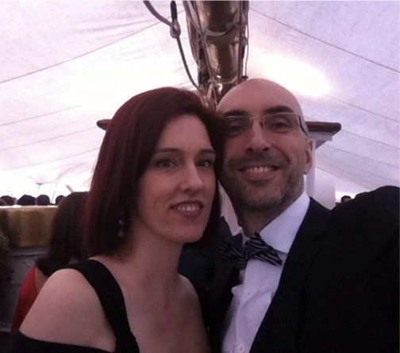
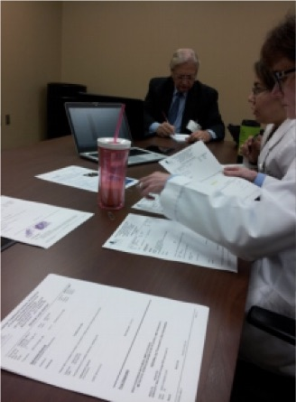
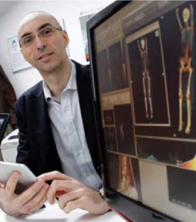
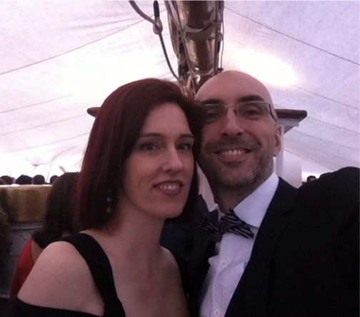
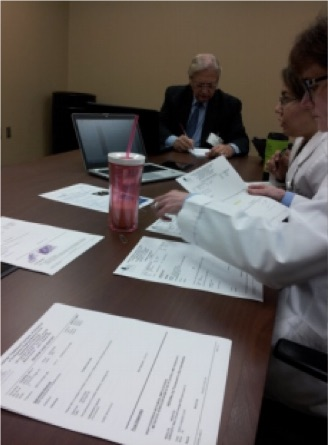
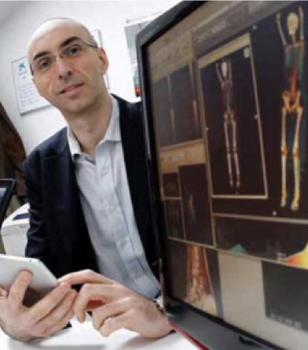

Medicina de precisión y Personalizada
Genómica, Big Data y Anaytics
UCH 20170523 - Lima (Perú)
Jorge Cortell | @jorgecortell
Fundador y CEO de @kanteron


¿Qué significa eso para los médicos?
Quizá la pregunta es... ¿qué es un médico?¿Paloma, Profesional, PC... Paciente?
Ejemplo práctico: PERÚ
| Área | Impacto |
|---|---|
| Ahorro terapias | 10.350 quimioterapias al año evitables |
| Ahorro medicación | Cáncer de mama: USD$99M Anticoagulantes: USD$786M Depresión: USD$2B |
| EMA | 16.946 evitables Reducción 70% hemorragias |
No "QUÉ",
sino "¿POR QUÉ?"
¿Cuál es la motivación más potente?
 






http://news.microsoft.com/en-gb/features/one-mans-quest-revolutionise-cancer-treatment/
Muchas gracias
Esta presentación se encuentra online en: https://jcortell.github.io/UCH20170523

jcortell@kanteron.com
@jorgecortell
linkedin.com/in/jcortell